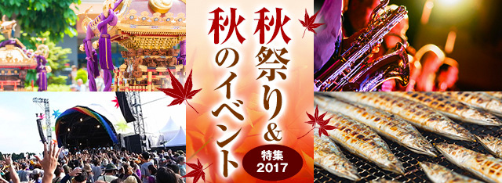
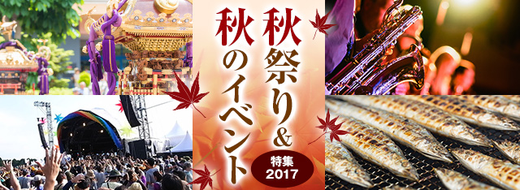
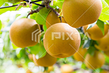
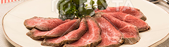
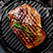

[最新の特集] ゴールデンウィーク特集2018 2018年最新版・ビアガーデン特集 バーベキュー特集2018 [おすすめ情報] 新名所 東京土産 アンテナショップ 東京女子会   お祭りシーズンもいよいよ佳境の11月！東京をはじめ、神奈川･千葉･埼玉では多くの秋祭りやイベントが開催されます。食欲をそそる秋にぴったりの「グルメフェス」から大人が楽しめるお酒のイベントまで多種多様なラインナップを一挙ご紹介。 注目の秋祭り＆秋のイベント イベント イベント名イベント名イベント名イベント名 2018年10月28日(aaa)～11月28日(aaa) 六本木ヒルズアリーナ 紅葉 イベント名イベント名イベント名イベント名 2018年10月28日(aaa)～11月28日(aaa) 六本木ヒルズアリーナ グルメ  イベント名イベント名イベント名イベント名 2018年10月28日(aaa)～11月28日(aaa) 六本木ヒルズアリーナ おすすめ秋祭りをもっと見る PICKUPコンテンツ デートにぴったり！バレンタインイベント デートにぴったりな気分があがるイベントをご紹介！ PICKUPコンテンツ  デートにぴったり！秋のイベント デートにぴったりな気分があがるイベントをご紹介！ 秋祭り＆秋のイベントのお役立ち情報  タイトルタイトルタイトルタイトル がNEWPR タイトルタイトルタイトルタイトル テキストが入ります。テキストが入ります。PR タイトルタイトルタイトルタイトル テキストが入ります。テキストが入ります。 タイトルタイトルタイトルタイトル テキストが入ります。テキストが入ります。 おでかけ記事をもっと見る エリアから秋祭りを探す 東京 神奈川 千葉 埼玉 掘り出し物がいっぱい 口コミをもっと見る 秋祭り・秋のイベント情報を投稿しよう PR